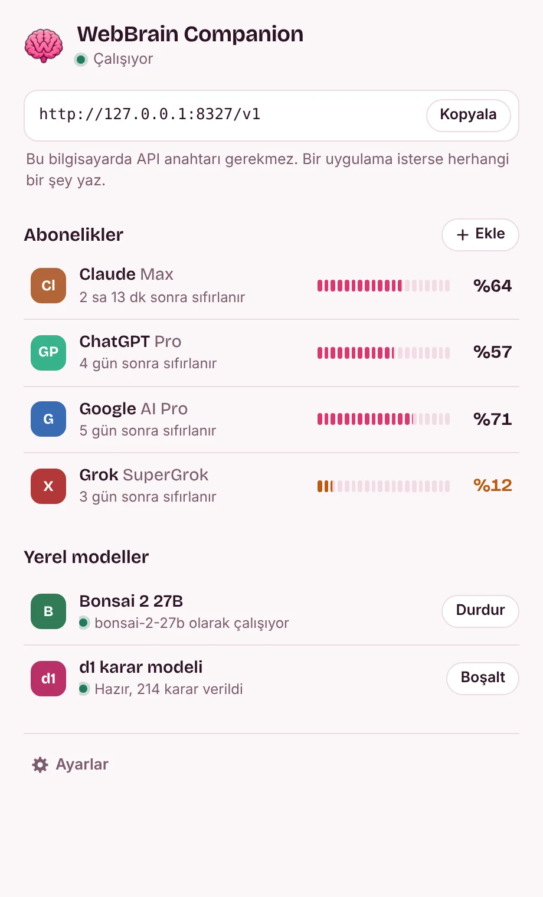
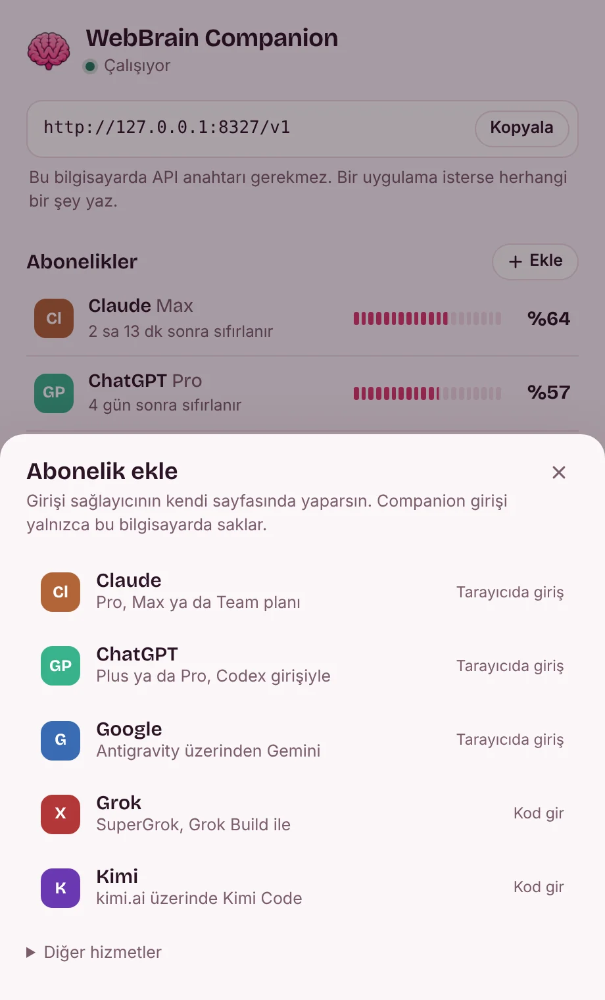
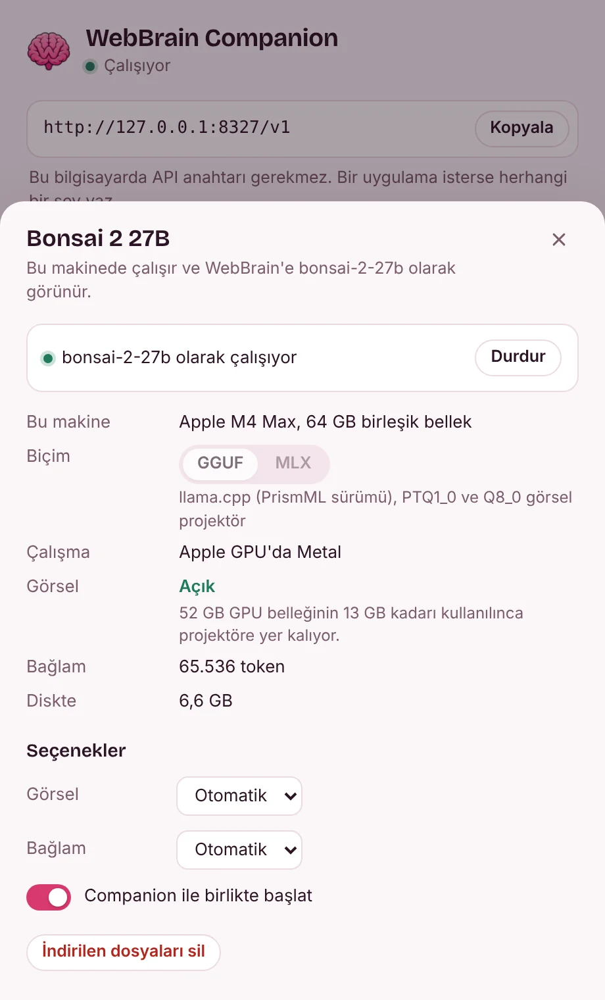

Zaten ödediğin yapay zekâ aboneliklerini WebBrain'de kullan
WebBrain Companion menü çubuğunda ya da sistem tepsisinde durur. Claude, ChatGPT, Google, Grok veya Kimi hesabına bir kez giriş yap; WebBrain hepsine bilgisayarındaki tek bir adresten ulaşsın. Tepsi, her planda ne kadar hakkın kaldığını ve ne zaman sıfırlanacağını gösterir.
Gerisi tek bir küçük panelde
Paneli simgeye tıklayarak açarsın. Tek sayfada WebBrain'in adresi, her planda kalan hak ve iki yerel model durur; ayrıntılar için bir satıra, ayarlar için dişli simgesine tıkla. Panel açık ya da koyu temana uyar; Türkçe ve İngilizce konuşur.

Tek sayfa
WebBrain'in istediği adres, her planın bitmeye en yakın sınırı ve ana düğmeleriyle yerel modeller. Bu bilgisayarda API anahtarı yok.

Abonelik ekleme
Girişi sağlayıcının kendi sayfasında yaparsın. Oturum bilgisi bilgisayarında kalır.

Yerel modeller
Bonsai 2 27B'ye tıkla: nerede çalıştığını ve görsellerin sığıp sığmadığını görür, seçeneklerini değiştirirsin. d1 de aynı şekilde açılır.
Bonsai 2 27B, makinene göre ayarlanır
PrismML'in Ternary Bonsai 2 27B modeli 27 milyar parametreyi 5,95 GB'a sığdırır. Companion onu Q8_0 görsel projektörüyle ve PrismML'in llama.cpp sürümüyle, Apple Silicon'da istersen MLX paketi olarak kurar ve aboneliklerinin yanında bonsai-2-27b adıyla sunar.
Daha hiçbir şey inmeden modelin nerede çalışacağını ve görsel girdinin sığıp sığmayacağını hesaplar. Model ve bağlamı yerleştikten sonra GPU'da yaklaşık 1 GB yer kalıyorsa görsel projektör GPU'ya, yalnızca sistem belleğinde yer varsa CPU'ya gider; ikisi de yoksa kapalı kalır. Bu seçimi panelden değiştirebilirsin.
| Makine | Nerede çalışır | Görsel girdi | Bağlam |
|---|---|---|---|
| MacBook Air, 8 GB | Apple GPU'da Metal. Mac'teki bellekten fazlasını ister, takas (swap) beklenir. | Kapalı | 8K token |
| MacBook Pro, 16 GB | Apple GPU'da Metal | Açık, GPU | 16K token |
| RTX 4060 (8 GB) ve 16 GB RAM'li dizüstü | CUDA, 64 katmanın 57'si GPU'da | Açık, CPU | 8K token |
| RTX 4090 (24 GB) ve 64 GB RAM'li masaüstü | CUDA, tamamı GPU'da | Açık, GPU | 64K token |
| Radeon RX 7600 (8 GB) ve 32 GB RAM'li masaüstü | Vulkan, 64 katmanın 61'i GPU'da | Açık, CPU | 8K token |
| Ekran kartı olmayan, 16 GB RAM'li PC | CPU | Açık, CPU | 8K token |
| Ekran kartı olmayan, 8 GB RAM'li PC | CPU, payı çok az | Kapalı | 8K token |
Companion'ın planlayıcısı toplam ve boş belleğe bakarak hesaplar; son kararı kurulum anında makinendeki değerler verir. Apple Silicon'da MLX paketi kendi görsel katmanını taşır, görsel girdi her zaman açıktır.
WebBrain'in karar modeli, tarayıcının dışında
WebBrain'in d1 modeli bir sayfa ve en fazla dört ekran görüntüsü hakkında evet/hayır, seçim ve puan sorularını yanıtlar; örneğin bir görevin bitip bitmediğini. Companion modeli ONNX Runtime ile çalıştırır ve HTTP üzerinden yanıtlar; böylece 1,9 GB'lık modeli bir tarayıcı sekmesi yüklemek zorunda kalmaz. Go'ya taşınan sürüm, WebBrain'in JavaScript adaptörüyle aynı token'ları ve olasılıkları verir. Yerel d1 Windows, Linux ve Apple Silicon Mac'lerde kullanılabilir; Intel Mac'lerde kullanılamaz.
Soru
curl http://127.0.0.1:8327/companion/v1/decide \
-H "Content-Type: application/json" \
-d '{"state": "Order #1042 is confirmed.",
"questions": {"completion": {
"type": "choice",
"instructions": "Did the task finish?",
"criteria": {"completed": "Confirmed",
"not_completed": "Failed or unfinished",
"unknown": "Not established"}}}}'Yanıt (CPU'da 273 ms)
{"answers": {"completion": {
"choice": "completed",
"confidence": 0.99997,
"probabilities": {"completed": 0.99997,
"not_completed": 0.000002,
"unknown": 0.000033}}},
"diagnostics": {"runtime": "onnxruntime 1.31.0 (CPU)", …}}WebBrain'i bağla
Bunu bir kez yaparsın. Bu bilgisayardaki uygulamaların API anahtarına ihtiyacı yok.
- Companion'ı kur ve aç. Panelinden bir abonelik ekle ve girişi tarayıcında tamamla.
- Adresi (
http://127.0.0.1:8327/v1) panelden ya da tepsi menüsünden kopyala. - WebBrain'de Sağlayıcılar sayfasını aç (yan paneldeki model menüsünde Daha fazla…), Local OpenAI-compatible Proxy'yi seç ve adresi WebBrain'in doldurduğu 8317 yerine yapıştır. WebBrain API anahtarı ister: herhangi bir şey yaz.
- Modelleri yükle'ye bas, bir model seç ve Bağlantıyı sına. Görseli yalnızca resim kabul eden bir model için aç.
Bu bilgisayardaki OpenAI, Anthropic ya da Gemini uyumlu her istemci aynı adresi anahtarsız kullanabilir. Başka bir cihazdan kullanmak için panelin ayarlarından ağ erişimini aç; o cihaz panelin gösterdiği API anahtarını kullanmalı.
İndir
Sürüm 0.1.2. Her paket tek bir program içerir; ayarların ve girişlerin kullanıcı klasöründe durur.
macOS
macOS 12 ve sonrası, Apple Silicon ve Intel (d1 için Apple Silicon gerekli)
Senin sisteminWebBrain Companion'ı Uygulamalar klasörüne taşı. Sürüm Apple onayından (notarization) geçmedi: ilk açılışta Sistem Ayarları, Gizlilik ve Güvenlik bölümünden izin ver (Yine de Aç). macOS 14 ve öncesinde Control tuşuyla tıklayıp Aç'ı seçmen yeterli.
Windows
Windows 10 ve 11, x64 ve Arm64
Senin sisteminKurulum dosyasını çalıştır: yönetici izni istemeden senin hesabına kurar ve WebBrain Companion'ı Başlat menüsüne ekler. Kurulum dosyası kod imzalı olana kadar SmartScreen "Windows bilgisayarınızı korudu" diyebilir: Ek bilgi'yi, ardından Yine de çalıştır'ı seç.
Linux
x64 ve Arm64
Senin sisteminArşivi aç ve webbrain-companion'ı çalıştır. Simge için StatusNotifierItem destekli bir tepsi gerekir: KDE, XFCE ya da AppIndicator eklentili GNOME.
Giriş yapmadan önce
Bilgisayarında kalanlar
- Bu bilgisayarda API anahtarı gerekmez: Companion yalnızca 127.0.0.1'den gelen istekleri yanıtlar ve web sayfalarını geri çevirir; böylece girdiğin bir site planlarını harcayamaz. WebBrain gibi tarayıcı eklentileri ve bu bilgisayardaki uygulamalar onu kullanabilir.
- Diğer cihazlar yalnızca panelin ayarlarından ağ erişimini açarsan bağlanabilir. Companion o zaman 0.0.0.0'da dinler ve o cihazlar panelin gösterdiği API anahtarını kullanmalıdır.
- Girişler kullanıcı klasöründe saklanır ve yalnızca ait oldukları sağlayıcıya gönderilir.
- Analitik yok. Giriş yaptığın sağlayıcılar dışında yalnızca CLIProxyAPI'nin herkese açık model listesini alır; bir model kurduğunda da dosyalarını Hugging Face'ten, GitHub'dan ve MLX için PyPI'dan indirir.
- Bir aboneliğe giden istemler yine o sağlayıcıya gider. Bilgisayarında çalışan yalnızca Bonsai 2 27B ve d1'dir.
Sağlayıcının belirledikleri
- Bir aboneliğin proxy üzerinden çalışması, sağlayıcının buna izin verdiği anlamına gelmez. Anthropic'in tüketici koşulları API anahtarı dışındaki otomatik erişimi kısıtlar; Google'ın Gemini CLI koşulları da bu girişin üçüncü taraf araçlarla kullanılamayacağını söyler.
- Eklemeden önce planının ve bölgenin koşullarına bak. Hesabın senin için önemliyse sağlayıcının API anahtarı daha güvenli yoldur.
- Herkese açık Wi-Fi'da ağ erişimini kapalı tut ve 8327 portunu asla internete yönlendirme. API anahtarı internete dayanacak bir güvenlik sağlamaz.